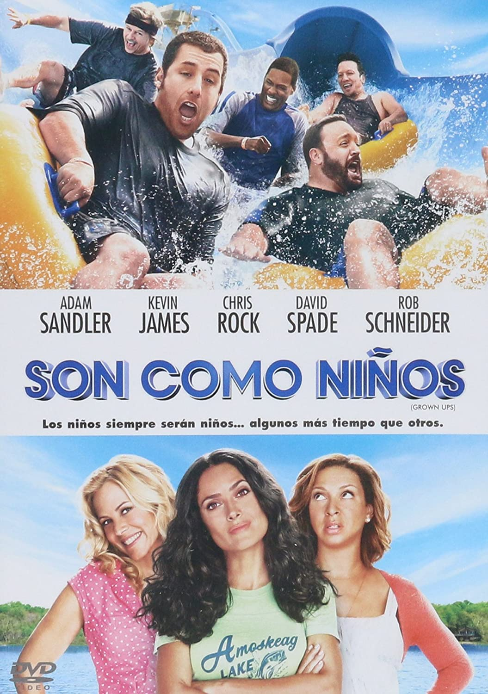

SON COMO NIÑOS
- ESTRENO:
22 de julio de 2010 - RATING:
4,9/10 - DURACION:
1h 42m -
SINOPSIS:
Son como niños es una comedia dirigida por Dennis Dugan (Un papá genial), que cuenta la historia de un grupo de niños, mejores amigos en su infancia, que se reúnen de nuevo en sus vidas adultas. - GENERO:
COMEDIA - AGREGAR A FAVORITOS